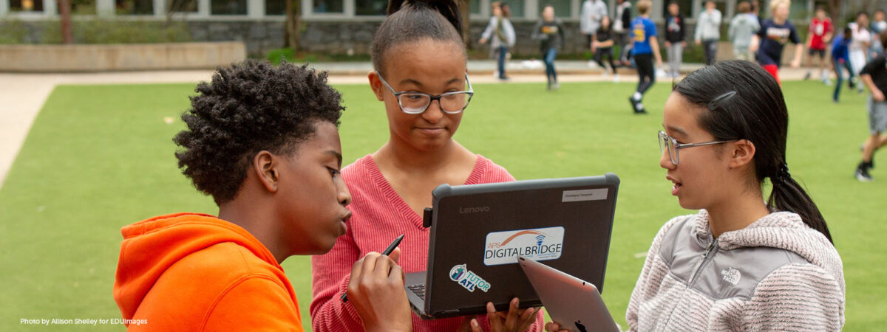

As education becomes increasingly digitized, it’s tempting to believe that simply providing students with technology is enough to level the playing field...
Our mission is to bridge the digital divide by providing access to technology, training, and resources, ensuring that all communities benefit from the opportunities of the digital world.
We aim to provide equitable access to technology and digital literacy programs. By closing the digital gap, we can create opportunities in education, employment, and social participation, ensuring that underserved communities are not left behind in the digital age.

Digitalization is transforming underserved communities, providing new opportunities for economic growth, education, and social inclusion. Our programs bring technology to these communities, allowing them to participate in the digital economy and ensuring they are not excluded from the modern world.